🌲 埃多拉的德鲁伊
The Druids of Edora · 设计：Stefan Feld · alea / Ravensburger AG 出版（2025）· 2–4 人（中文规则书全文转录·全书 12 页+双面规则参考表）
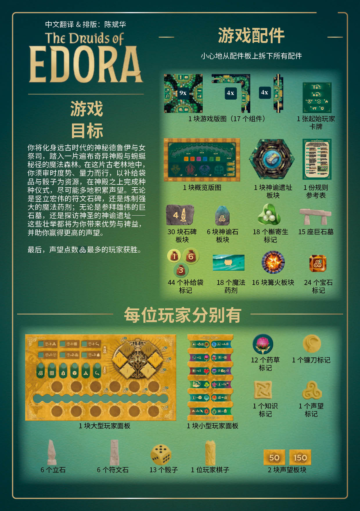
本页整理自玩家社群流传的《埃多拉的德鲁伊》(The Druids of Edora,Stefan Feld 设计,alea / Ravensburger AG 出版,2025)中文规则书扫描件(中文翻译 & 排版:陈斌华,译笔与《地下酒吧》同源),扫描图由网友直接提供。全书 12 页(封面 + P.2–P.12)与双面规则参考表(「中文 魔法药剂」/「魔法药剂(续) + 石碑」)共 14 幅扫描图逐页全文转录,原书扫描图随文嵌入——点击任意图片即可放大查看。规则内容归 alea、Ravensburger AG 及版权方所有,转录仅供个人学习查阅。
整理说明:〔三螺旋〕为声望点数图标,〔知识结〕〔槲寄生〕等为印刷图标标记;〔图 …〕〔右栏摘要〕〔费用:N 槲寄生〕〔石碑面值 N〕说明为整理所拟(原书每步骤右侧附摘要卡,已并入各步骤之后;规则参考表石碑条目中两块骰子图形石碑未印面值数字,照录)。原书排印问题照录:「补给袋品」(封面与规则参考表,他处作「补给袋」)、「请确保每个 24 个神殿」(P.2,疑衍「每个」)、「记录记录条」(P.6 镰刀行动,衍「记录」)、「声望点」与「声望点数」混用、「15 点声望(3x5),而非九点」(P.10,汉字「九」与他处阿拉伯数字混用)、「并重新分配 2 点声望」(参考表 6 槲寄生药剂,语义存疑照录)。
封面
The Druids of EDORA（埃多拉的德鲁伊）
中文翻译 & 排版：陈斌华
游戏目标
你将化身远古时代的神秘德鲁伊与女祭司，踏入一片遍布奇异神殿与蜿蜒秘径的魔法森林。在这片古老林地中，你须审时度势、量力而行，以补给袋品与骰子为资源，在神殿之上完成种种仪式，尽可能地积累声望。无论是竖立宏伟的符文石碑，还是炼制强大的魔法药剂；无论是参拜雄伟的巨石墓，还是探访神圣的神谕遗址——这些壮举都将为你带来优势与裨益，并助你赢得更高的声望。
最后，声望点数〔三螺旋图标〕最多的玩家获胜。
游戏配件
小心地从配件板上拆下所有配件。
- 1 块游戏版图（17 个组件）
- 1 张起始玩家卡牌
- 1 块概览版图
- 1 块神谕遗址板块
- 1 份规则参考表
- 30 块石碑板块
- 6 块神谕石板块
- 18 个槲寄生标记
- 15 座巨石墓
- 44 个补给袋标记
- 18 个魔法药剂
- 16 块篝火板块
- 24 个宝石标记
每位玩家分别有
- 1 块大型玩家面板
- 1 块小型玩家面板
- 12 个药草标记
- 1 个镰刀标记
- 1 个知识标记
- 1 个声望标记
- 6 个立石
- 6 个符文石
- 13 个骰子
- 1 位玩家棋子
- 2 块声望板块（50/150）
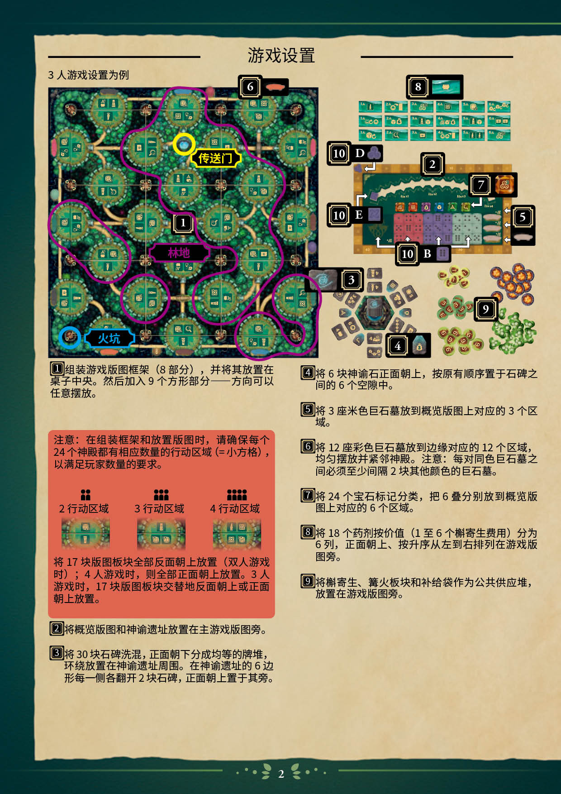
游戏设置
3 人游戏设置为例。
〔大图：游戏版图与配件设置示意——版图上标注「传送门」「林地」「火坑」；右侧自上而下为药剂列（标 8）、概览版图（标 2，其上另标 10 B/10 D/10 E 为声望标记、知识标记的摆放位，见下页）、神谕遗址与石碑（标 3/4）、彩色巨石墓（标 6）、槲寄生与补给袋等公共供应堆（标 9）〕
① 组装游戏版图框架（8 部分），并将其放置在桌子中央。然后加入 9 个方形部分——方向可以任意摆放。
注意：在组装框架和放置版图时，请确保每个 24 个神殿都有相应数量的行动区域（=小方格），以满足玩家数量的要求。
〔图示：2 人／3 人／4 人图标分别对应每座神殿 2／3／4 个行动区域〕
将 17 块版图板块全部反面朝上放置（双人游戏时）；4 人游戏时，则全部正面朝上放置。3 人游戏时，17 块版图板块交替地反面朝上或正面朝上放置。
② 将概览版图和神谕遗址放置在主游戏版图旁。
③ 将 30 块石碑洗混，正面朝下分成均等的牌堆，环绕放置在神谕遗址周围。在神谕遗址的 6 边形每一侧各翻开 2 块石碑，正面朝上置于其旁。
④ 将 6 块神谕石正面朝上，按原有顺序置于石碑之间的 6 个空隙中。
⑤ 将 3 座米色巨石墓放到概览版图上对应的 3 个区域。
⑥ 将 12 座彩色巨石墓放到边缘对应的 12 个区域，均匀摆放并紧邻神殿。注意：每对同色巨石墓之间必须至少间隔 2 块其他颜色的巨石墓。
⑦ 将 24 个宝石标记分类，把 6 叠分别放到概览版图上对应的 6 个区域。
⑧ 将 18 个药剂按价值（1 至 6 个槲寄生费用）分为 6 列，正面朝上、按升序从左到右排列在游戏版图旁。
⑨ 将槲寄生、篝火板块和补给袋作为公共供应堆，放置在游戏版图旁。
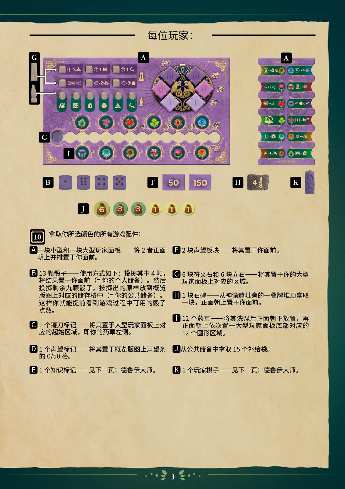
每位玩家：
〔图：大型玩家面板（标 A；G 指向符文石／立石摆放区、C 指向镰刀起始区、I 指向底部药草圆形区）、小型玩家面板（标 A）、骰子（标 B）、声望板块 50/150（标 F）、石碑（标 H，面值为 4）、玩家棋子（标 K）、补给袋 6/3/3/1/1/1（标 J）〕
⑩ 拿取你所选颜色的所有游戏配件：
A 一块小型和一块大型玩家面板——将 2 者正面朝上并排置于你面前。
B 13 颗骰子——使用方式如下：投掷其中 4 颗，将结果置于你面前（=你的个人储备）。然后投掷剩余九颗骰子，按掷出的原样放到概览版图上对应的储存格中（=你的公共储备）。这样你就能提前看到游戏过程中可用的骰子点数。
C 1 个镰刀标记——将其置于大型玩家面板上对应的起始区域，即你的药草左侧。
D 1 个声望标记——将其置于概览版图上声望条的 0/50 格。
E 1 个知识标记——见下一页：德鲁伊大师。
F 2 块声望板块——将其置于你面前。
G 6 块符文石和 6 块立石——将其置于你的大型玩家面板上对应的区域。
H 1 块石碑——从神谕遗址旁的一叠牌堆顶拿取一块，正面朝上置于你面前。
I 12 个药草——将其洗混后正面朝下放置，再正面朝上依次置于大型玩家面板底部对应的 12 个圆形区域。
J 从公共储备中拿取 15 个补给袋。
K 1 个玩家棋子——见下一页：德鲁伊大师。
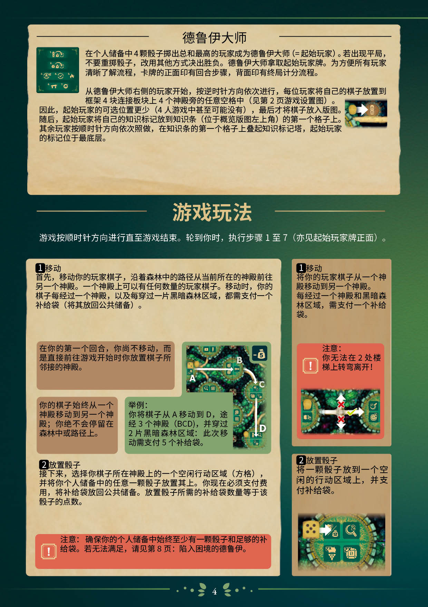
德鲁伊大师
〔图：起始玩家卡牌正面（印回合步骤图标一览）〕
在个人储备中 4 颗骰子掷出总和最高的玩家成为德鲁伊大师（=起始玩家）。若出现平局，不要重掷骰子，改用其他方式决出胜负。德鲁伊大师拿取起始玩家牌。为方便所有玩家清晰了解流程，卡牌的正面印有回合步骤，背面印有终局计分流程。
从德鲁伊大师右侧的玩家开始，按逆时针方向依次进行，每位玩家将自己的棋子放置到框架 4 块连接板块上 4 个神殿旁的任意空格中（见第 2 页游戏设置图）。
因此，起始玩家的可选位置更少（4 人游戏中甚至可能没有），最后才将棋子放入版图。随后，起始玩家将自己的知识标记放到知识条（位于概览版图左上角）的第一个格子上。其余玩家按顺时针方向依次照做，在知识条的第一个格子上叠起知识标记塔，起始玩家的标记位于最底层。
〔图：玩家棋子放到神殿旁的空格〕
游戏玩法
游戏按顺时针方向进行直至游戏结束。轮到你时，执行步骤 1 至 7（亦见起始玩家牌正面）。
步骤 1：移动
首先，移动你的玩家棋子，沿着森林中的路径从当前所在的神殿前往另一个神殿。一个神殿上可以有任何数量的玩家棋子。移动时，你的棋子每经过一个神殿，以及每穿过一片黑暗森林区域，都需支付一个补给袋（将其放回公共储备）。
在你的第一个回合，你尚不移动，而是直接前往游戏开始时你放置棋子所邻接的神殿。
你的棋子始终从一个神殿移动到另一个神殿；你绝不会停留在森林中或路径上。
举例：你将棋子从 A 移动到 D，途经 3 个神殿（BCD），并穿过 2 片黑暗森林区域；此次移动需支付 5 个补给袋。
〔图：版图路径 A→B→C→D 示意，角落标「-5」补给袋〕
步骤 2：放置骰子
接下来，选择你棋子所在神殿上的一个空闲行动区域（方格），并将你个人储备中的任意一颗骰子放置其上。你现在必须支付费用，将补给袋放回公共储备。放置骰子所需的补给袋数量等于该骰子的点数。
注意：确保你的个人储备中始终至少有一颗骰子和足够的补给袋。若无法满足，请见第 8 页：陷入困境的德鲁伊。
〔右栏摘要〕1 移动：将你的玩家棋子从一个神殿移动到另一个神殿。每经过一个神殿和黑暗森林区域，需支付一个补给袋。
〔右栏摘要〕> 注意：你无法在 2 处楼梯上转弯离开！
〔图：楼梯十字交叉处，直行可、转弯打叉示意〕
〔右栏摘要〕2 放置骰子：将一颗骰子放到一个空闲的行动区域上，并支付补给袋。
〔图：骰子放到神殿行动区域示意〕
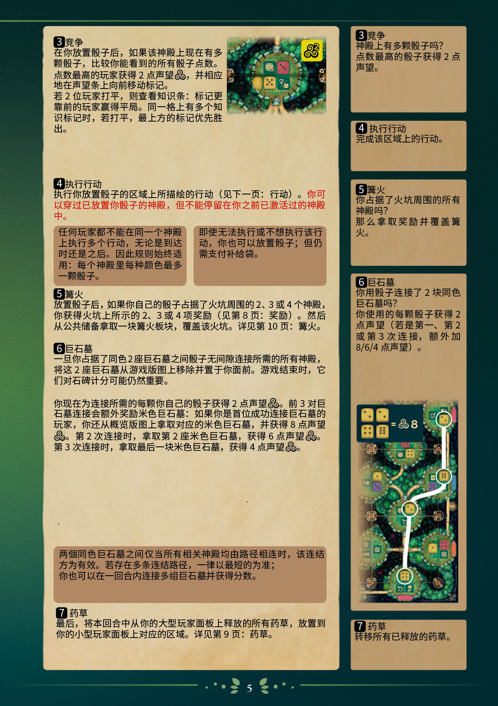
步骤 3：竞争
在你放置骰子后，如果该神殿上现在有多颗骰子，比较你能看到的所有骰子点数。点数最高的玩家获得 2 点声望〔三螺旋〕，并相应地在声望条上向前移动标记。
若 2 位玩家打平，则查看知识条：标记更靠前的玩家赢得平局。同一格上有多个知识标记时，若打平，最上方的标记优先胜出。
〔图：神殿上多颗骰子比较点数，角标「三螺旋 ×2」〕
步骤 4：执行行动
执行你放置骰子的区域上所描绘的行动（见下一页：行动）。你可以穿过已放置你骰子的神殿，但不能停留在你之前已激活过的神殿中。（原书红字强调）
任何玩家都不能在同一个神殿上执行多个行动，无论是到达时还是之后。因此规则始终适用：每个神殿里每种颜色最多一颗骰子。
即使无法执行或不想执行该行动，你也可以放置骰子；但仍需支付补给袋。
步骤 5：篝火
放置骰子后，如果你自己的骰子占据了火坑周围的 2、3 或 4 个神殿，你获得火坑上所示的 2、3 或 4 项奖励（见第 8 页：奖励）。然后从公共储备拿取一块篝火板块，覆盖该火坑。详见第 10 页：篝火。
步骤 6：巨石墓
一旦你占据了同色 2 座巨石墓之间骰子无间隙连接所需的所有神殿，将这 2 座巨石墓从游戏版图上移除并置于你面前。游戏结束时，它们对石碑计分可能仍然重要。
你现在为连接所需的每颗你自己的骰子获得 2 点声望〔三螺旋〕。前 3 对巨石墓连接会额外奖励米色巨石墓：如果你是首位成功连接巨石墓的玩家，你还从概览版图上拿取对应的米色巨石墓，并获得 8 点声望〔三螺旋〕。第 2 次连接时，拿取第 2 座米色巨石墓，获得 6 点声望〔三螺旋〕。第 3 次连接时，拿取最后一块米色巨石墓，获得 4 点声望〔三螺旋〕。
两个同色巨石墓之间仅当所有相关神殿均由路径相连时，该连结方为有效。若存在多条连结路径，一律以最短的为准；你也可以在一回合内连接多组巨石墓并获得分数。
步骤 7：药草
最后，将本回合中从你的大型玩家面板上释放的所有药草，放置到你的小型玩家面板上对应的区域。详见第 9 页：药草。
〔右栏摘要〕3 竞争：神殿上有多颗骰子吗？点数最高的骰子获得 2 点声望。
〔右栏摘要〕4 执行行动：完成该区域上的行动。
〔右栏摘要〕5 篝火：你占据了火坑周围的所有神殿吗？那么拿取奖励并覆盖篝火。
〔右栏摘要〕6 巨石墓：你用骰子连接了 2 块同色巨石墓吗？你使用的每颗骰子获得 2 点声望（若是第一、第 2 或第 3 次连接，额外加 8/6/4 点声望）。
〔图：4 颗骰子「= 三螺旋 8」；下方为两座巨石墓间的骰子连接路径示意〕
〔右栏摘要〕7 药草：转移所有已释放的药草。
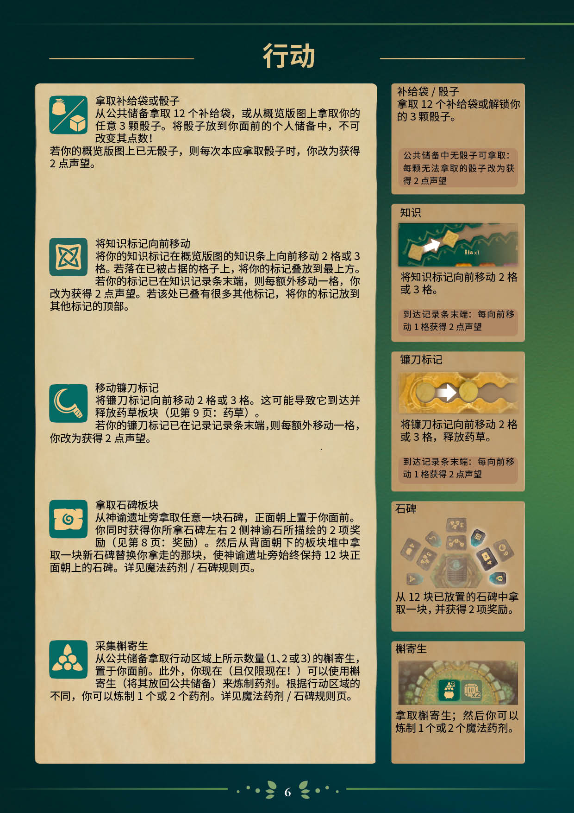
行动
拿取补给袋或骰子 〔图标：补给袋＋骰子〕
从公共储备拿取 12 个补给袋，或从概览版图上拿取你的任意 3 颗骰子。将骰子放到你面前的个人储备中，不可改变其点数！
若你的概览版图上已无骰子，则每次本应拿取骰子时，你改为获得 2 点声望。
〔右栏摘要〕补给袋／骰子：拿取 12 个补给袋或解锁你的 3 颗骰子。
〔右栏摘要〕> 公共储备中无骰子可拿取：每颗无法拿取的骰子改为获得 2 点声望
将知识标记向前移动 〔图标：知识结纹〕
将你的知识标记在概览版图的知识条上向前移动 2 格或 3 格。若落在已被占据的格子上，将你的标记叠放到最上方。
若你的标记已在知识记录条末端，则每额外移动一格，你改为获得 2 点声望。若该处已叠有很多其他标记，将你的标记放到其他标记的顶部。
〔右栏摘要〕知识：将知识标记向前移动 2 格或 3 格。
〔右栏摘要〕> 到达记录条末端：每向前移动 1 格获得 2 点声望
移动镰刀标记 〔图标：镰刀〕
将镰刀标记向前移动 2 格或 3 格。这可能导致它到达并释放药草板块（见第 9 页：药草）。
若你的镰刀标记已在记录记录条末端，则每额外移动一格，你改为获得 2 点声望。
〔右栏摘要〕镰刀标记：将镰刀标记向前移动 2 格或 3 格，释放药草。
〔右栏摘要〕> 到达记录条末端：每向前移动 1 格获得 2 点声望
拿取石碑板块 〔图标：石碑漩涡纹〕
从神谕遗址旁拿取任意一块石碑，正面朝上置于你面前。你同时获得你所拿石碑左右 2 侧神谕石所描绘的 2 项奖励（见第 8 页：奖励）。然后从背面朝下的板块堆中拿取一块新石碑替换你拿走的那块，使神谕遗址旁始终保持 12 块正面朝上的石碑。详见魔法药剂／石碑规则页。
〔右栏摘要〕石碑：从 12 块已放置的石碑中拿取一块，并获得 2 项奖励。
采集槲寄生 〔图标：槲寄生三果〕
从公共储备拿取行动区域上所示数量（1、2 或 3）的槲寄生，置于你面前。此外，你现在（且仅限现在！）可以使用槲寄生（将其放回公共储备）来炼制药剂。根据行动区域的不同，你可以炼制 1 个或 2 个药剂。详见魔法药剂／石碑规则页。
〔右栏摘要〕槲寄生：拿取槲寄生；然后你可以炼制 1 个或 2 个魔法药剂。
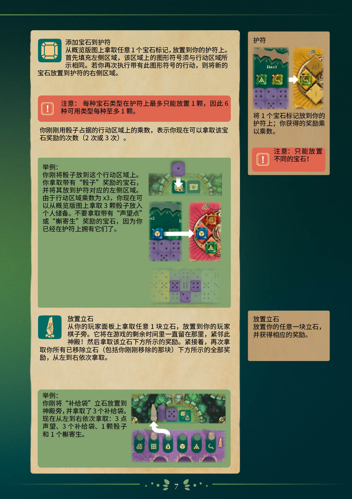
添加宝石到护符 〔图标：宝石〕
从概览版图上拿取任意 1 个宝石标记，放置到你的护符上。首先填充左侧区域，该区域上的图形符号须与行动区域所示相同。若你再次执行带有此图形符号的行动，则将新的宝石放置到护符的右侧区域。
注意：每种宝石类型在护符上最多只能放置 1 颗，因此 6 种可用类型每种至多 1 颗。
你刚刚用骰子占据的行动区域上的乘数，表示你现在可以拿取该宝石奖励的次数（2 次或 3 次）。
举例：
你刚将骰子放到这个行动区域上。你拿取带有「骰子」奖励的宝石，并将其放到护符对应的左侧区域。由于行动区域乘数为 x3，你现在可以从概览版图上拿取 3 颗骰子放入个人储备。不要拿取带有「声望点」或「槲寄生」奖励的宝石，因为你已经在护符上拥有它们了。
〔配图：行动区域（乘数 x3）与「骰子奖励」宝石→放入护符左侧；概览版图储存格（x2、x1）→拿取骰子放入护符另一侧〕
〔右栏摘要〕护符：将 1 个宝石标记放到你的护符上；你获得的奖励乘以乘数。
〔右栏摘要〕> 注意：只能放置不同的宝石！
放置立石 〔图标：立石〕
从你的玩家面板上拿取任意 1 块立石，放置到你的玩家棋子旁。它将在游戏的剩余时间里一直留在那里，紧邻此神殿！然后拿取该立石下方所示的奖励。紧接着，再次拿取你所有已移除立石（包括你刚刚移除的那块）下方所示的全部奖励，从左到右依次拿取。
举例：
你刚将「补给袋」立石放置到神殿旁，并拿取了 3 个补给袋。现在从左到右依次拿取：3 点声望、3 个补给袋、1 颗骰子和 1 个槲寄生。
〔配图：立石放置到神殿旁；大型玩家面板底部立石槽位与奖励图标行（三螺旋、知识结、补给袋、骰子、槲寄生、镰刀）〕
〔右栏摘要〕放置立石：放置你的任意一块立石，并获得相应的奖励。
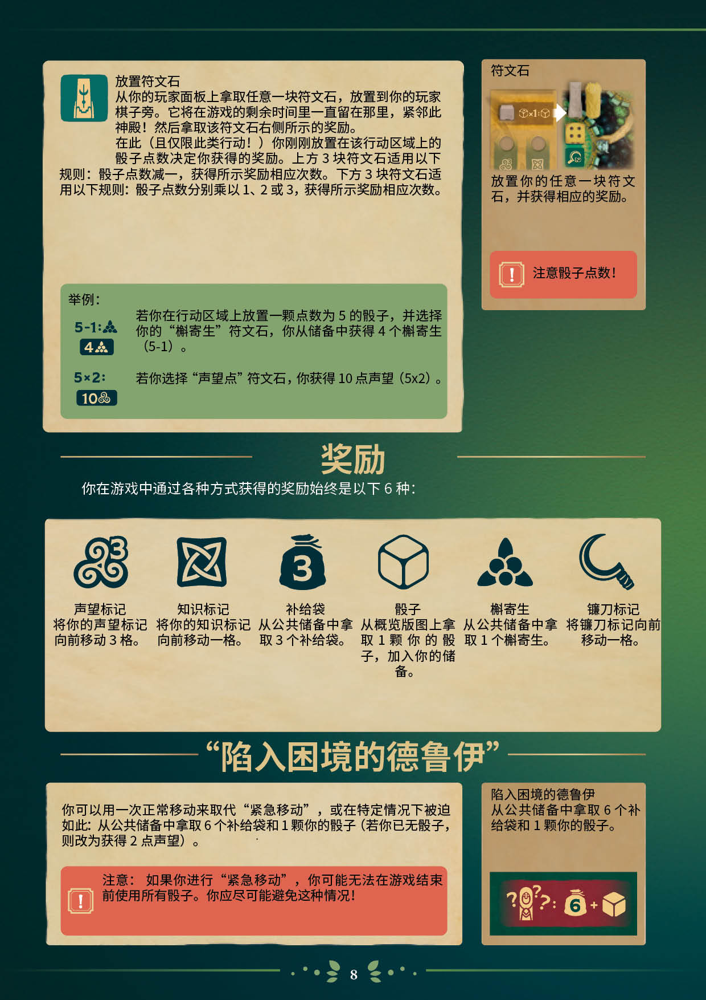
放置符文石 〔图标：符文石〕
从你的玩家面板上拿取任意一块符文石，放置到你的玩家棋子旁。它将在游戏的剩余时间里一直留在那里，紧邻此神殿！然后拿取该符文石右侧所示的奖励。
在此（且仅限此类行动！）你刚刚放置在该行动区域上的骰子点数决定你获得的奖励。上方 3 块符文石适用以下规则：骰子点数减一，获得所示奖励相应次数。下方 3 块符文石适用以下规则：骰子点数分别乘以 1、2 或 3，获得所示奖励相应次数。
举例：
〔5−1：槲寄生 → 4 槲寄生〕
若你在行动区域上放置一颗点数为 5 的骰子，并选择你的「槲寄生」符文石，你从储备中获得 4 个槲寄生（5-1）。
〔5×2：→ 10 三螺旋〕
若你选择「声望点」符文石，你获得 10 点声望（5x2）。
〔右栏摘要〕符文石：放置你的任意一块符文石，并获得相应的奖励。
〔右栏摘要〕> 注意骰子点数！
奖励
你在游戏中通过各种方式获得的奖励始终是以下 6 种：
- 声望标记〔三螺旋图标〕——将你的声望标记向前移动 3 格。
- 知识标记〔知识结图标〕——将你的知识标记向前移动一格。
- 补给袋〔补给袋图标，印「3」〕——从公共储备中拿取 3 个补给袋。
- 骰子〔骰子图标〕——从概览版图上拿取 1 颗你的骰子，加入你的储备。
- 槲寄生〔槲寄生图标〕——从公共储备中拿取 1 个槲寄生。
- 镰刀标记〔镰刀图标〕——将镰刀标记向前移动一格。
「陷入困境的德鲁伊」
你可以用一次正常移动来取代「紧急移动」，或在特定情况下被迫如此：从公共储备中拿取 6 个补给袋和 1 颗你的骰子（若你已无骰子，则改为获得 2 点声望）。
注意：如果你进行「紧急移动」，你可能无法在游戏结束前使用所有骰子。你应尽可能避免这种情况！
〔右栏摘要〕陷入困境的德鲁伊：从公共储备中拿取 6 个补给袋和 1 颗你的骰子。
〔图：困境图标「?」＋「6」补给袋＋骰子〕
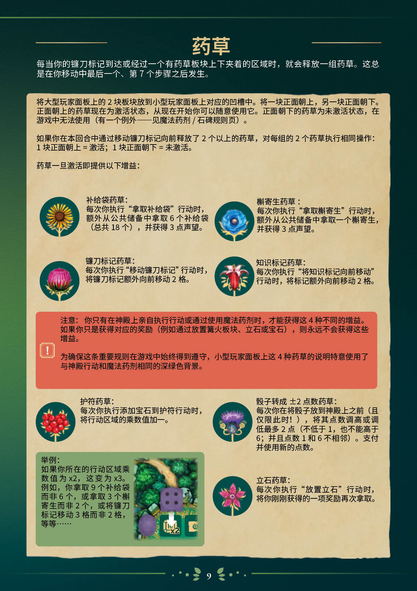
药草
每当你的镰刀标记到达或经过一个有药草板块上下夹着的区域时，就会释放一组药草。这总是在你移动中最后一个、第 7 个步骤之后发生。
将大型玩家面板上的 2 块板块放到小型玩家面板上对应的凹槽中。将一块正面朝上，另一块正面朝下。正面朝上的药草现在为激活状态，从现在开始你可以随意使用它。正面朝下的药草为未激活状态，在游戏中无法使用（有一个例外——见魔法药剂／石碑规则页）。
如果你在本回合中通过移动镰刀标记向前释放了 2 个以上的药草，对每组的 2 个药草执行相同操作：1 块正面朝上 = 激活；1 块正面朝下 = 未激活。
药草一旦激活即提供以下增益：
- 补给袋药草〔图标：向日葵〕——每次你执行「拿取补给袋」行动时，额外从公共储备中拿取 6 个补给袋（总共 18 个），并获得 3 点声望。
- 槲寄生药草〔图标：蓝花〕——每次你执行「拿取槲寄生」行动时，额外从公共储备中拿取一个槲寄生，并获得 3 点声望。
- 镰刀标记药草〔图标：蓟〕——每次你执行「移动镰刀标记」行动时，将镰刀标记额外向前移动 2 格。
- 知识标记药草〔图标：红花〕——每次你执行「将知识标记向前移动」行动时，将标记额外向前移动 2 格。
注意：你只有在神殿上亲自执行行动或通过使用魔法药剂时，才能获得这 4 种不同的增益。如果你只是获得对应的奖励（例如通过放置篝火板块、立石或宝石），则永远不会获得这些增益。
为确保这条重要规则在游戏中始终得到遵守，小型玩家面板上这 4 种药草的说明特意使用了与神殿行动和魔法药剂相同的深绿色背景。
- 护符药草〔图标：红果〕——每次你执行添加宝石到护符行动时，将行动区域的乘数值加一。
- 骰子转成 ±2 点数药草〔图标：蓟花〕——每次你在将骰子放到神殿上之前（且仅限此时！），将其点数调高或调低最多 2 点（不低于 1，也不能高于 6；并且点数 1 和 6 不相邻）。支付并使用新的点数。
- 立石药草〔图标：粉花〕——每次你执行「放置立石」行动时，将你刚刚获得的一项奖励再次拿取。
举例：如果你所在的行动区域乘数值为 x2，这变为 x3。例如，你拿取 9 个补给袋而非 6 个，或拿取 3 个槲寄生而非 2 个，或将镰刀标记移动 3 格而非 2 格，等等……
〔配图：行动区域乘数 x2 示意〕
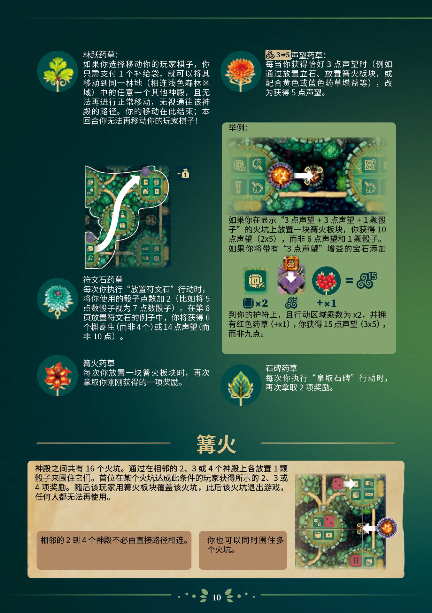
（续上页药草增益）
- 林跃药草〔图标：绿叶〕——如果你选择移动你的玩家棋子，你只需支付 1 个补给袋，就可以将其移动到同一林地（相连浅色森林区域）中的任意一个其他神殿，且无法再进行正常移动，无视通往该神殿的路径。你的移动在此结束；本回合你无法再移动你的玩家棋子！
- 符文石药草〔图标：绿绒花〕——每次你执行「放置符文石」行动时，将你使用的骰子点数加 2（比如将 5 点数骰子视为 7 点数骰子）。在第 8 页放置符文石的例子中，你将获得 6 个槲寄生（而非 4 个）或 14 点声望（而非 10 点）。
- 篝火药草〔图标：橙红花〕——每次你放置一块篝火板块时，再次拿取你刚刚获得的一项奖励。
- 声望药草〔图标：「三螺旋 3→5」〕——每当你获得恰好 3 点声望时（例如通过放置立石、放置篝火板块，或配合黄色或蓝色药草增益等），改为获得 5 点声望。
- 石碑药草〔图标：金边绿叶〕——每次你执行「拿取石碑」行动时，再次拿取 2 项奖励。
〔图：林跃药草移动示意，角标「-1」补给袋〕
举例：
如果你在显示「3 点声望 + 3 点声望 + 1 颗骰子」的火坑上放置一块篝火板块，你获得 10 点声望（2x5），而非 6 点声望和 1 颗骰子。
如果你将带有「3 点声望」增益的宝石添加到你的护符上，且行动区域乘数为 x2，并拥有红色药草（+x1），你获得 15 点声望（3x5），而非九点。
〔图解：护符 x2 ＋「声望 5」宝石＋「×1」红色药草 ＝ 声望 15〕
篝火
神殿之间共有 16 个火坑。通过在相邻的 2、3 或 4 个神殿上各放置 1 颗骰子来围住它们。首位在某个火坑达成此条件的玩家获得所示的 2、3 或 4 项奖励。随后该玩家用篝火板块覆盖该火坑，此后该火坑退出游戏，任何人都无法再使用。
相邻的 2 到 4 个神殿不必由直接路径相连。
你也可以同时围住多个火坑。
〔图：火坑被骰子围住并覆盖篝火板块示意〕
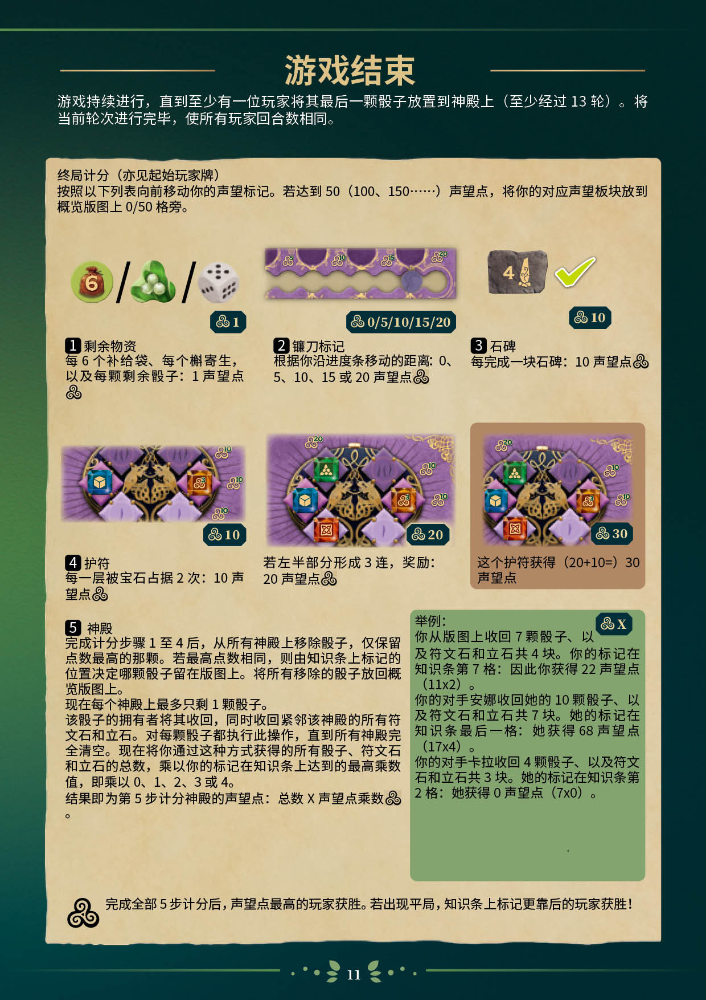
游戏结束
游戏持续进行，直到至少有一位玩家将其最后一颗骰子放置到神殿上（至少经过 13 轮）。将当前轮次进行完毕，使所有玩家回合数相同。
终局计分（亦见起始玩家牌）
按照以下列表向前移动你的声望标记。若达到 50（100、150……）声望点，将你的对应声望板块放到概览版图上 0/50 格旁。
1 剩余物资
每 6 个补给袋、每个槲寄生，以及每颗剩余骰子：1 声望点〔三螺旋〕。
〔图解：补给袋（6）／槲寄生／骰子 ＝ 声望 1〕
2 镰刀标记
根据你沿进度条移动的距离：0、5、10、15 或 20 声望点〔三螺旋〕。
〔图解：镰刀进度条标 0/5/10/15/20〕
3 石碑
每完成一块石碑：10 声望点〔三螺旋〕。
〔图解：石碑（面值 4）打勾 ＝ 声望 10〕
4 护符
每一层被宝石占据 2 次：10 声望点〔三螺旋〕。
若左半部分形成 3 连，奖励：20 声望点〔三螺旋〕。
这个护符获得（20+10=）30 声望点。
〔图解：护符计分三例 ＝ 声望 10／20／30〕
5 神殿
完成计分步骤 1 至 4 后，从所有神殿上移除骰子，仅保留点数最高的那颗。若最高点数相同，则由知识条上标记的位置决定哪颗骰子留在版图上。将所有移除的骰子放回概览版图上。
现在每个神殿上最多只剩 1 颗骰子。
该骰子的拥有者将其收回，同时收回紧邻该神殿的所有符文石和立石。对每颗骰子都执行此操作，直到所有神殿完全清空。现在将你通过这种方式获得的所有骰子、符文石和立石的总数，乘以你的标记在知识条上达到的最高乘数值，即乘以 0、1、2、3 或 4。
结果即为第 5 步计分神殿的声望点：总数 X 声望点乘数〔三螺旋〕。
举例：〔「声望 X」〕
你从版图上收回 7 颗骰子、以及符文石和立石共 4 块。你的标记在知识条第 7 格：因此你获得 22 声望点（11x2）。
你的对手安娜收回她的 10 颗骰子、以及符文石和立石共 7 块。她的标记在知识条最后一格：她获得 68 声望点（17x4）。
你的对手卡拉收回 4 颗骰子、以及符文石和立石共 3 块。她的标记在知识条第 2 格：她获得 0 声望点（7x0）。
〔三螺旋图标〕完成全部 5 步计分后，声望点最高的玩家获胜。若出现平局，知识条上标记更靠后的玩家获胜！
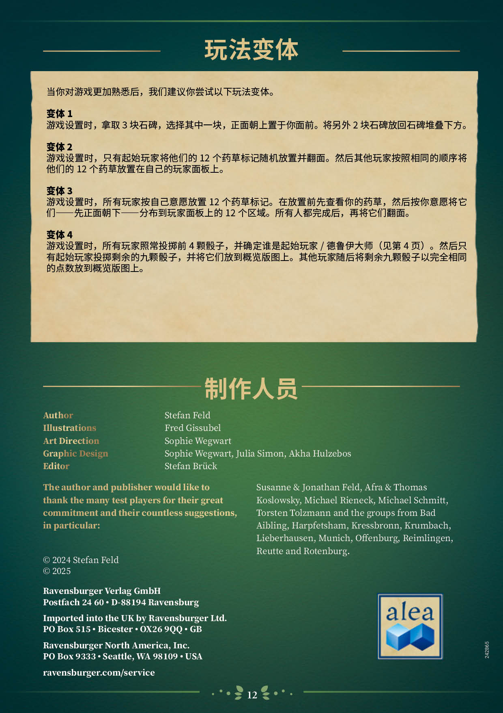
玩法变体
当你对游戏更加熟悉后，我们建议你尝试以下玩法变体。
变体 1
游戏设置时，拿取 3 块石碑，选择其中一块，正面朝上置于你面前。将另外 2 块石碑放回石碑堆叠下方。
变体 2
游戏设置时，只有起始玩家将他们的 12 个药草标记随机放置并翻面。然后其他玩家按照相同的顺序将他们的 12 个药草放置在自己的玩家面板上。
变体 3
游戏设置时，所有玩家按自己意愿放置 12 个药草标记。在放置前先查看你的药草，然后按你意愿将它们——先正面朝下——分布到玩家面板上的 12 个区域。所有人都完成后，再将它们翻面。
变体 4
游戏设置时，所有玩家照常投掷前 4 颗骰子，并确定谁是起始玩家／德鲁伊大师（见第 4 页）。然后只有起始玩家投掷剩余的九颗骰子，并将它们放到概览版图上。其他玩家随即将剩余九颗骰子以完全相同的点数放到概览版图上。
制作人员
Author：Stefan Feld
Illustrations：Fred Gissubel
Art Direction：Sophie Wegwart
Graphic Design：Sophie Wegwart, Julia Simon, Akha Hulzebos
Editor：Stefan Brück
The author and publisher would like to thank the many test players for their great commitment and their countless suggestions, in particular:
Susanne & Jonathan Feld, Afra & Thomas Koslowsky, Michael Rieneck, Michael Schmitt, Torsten Tolzmann and the groups from Bad Aibling, Harpfetsham, Kressbronn, Krumbach, Lieberhausen, Munich, Offenburg, Reimlingen, Reutte and Rotenburg.
© 2024 Stefan Feld
© 2025
Ravensburger Verlag GmbH
Postfach 24 60 • D-88194 Ravensburg
Imported into the UK by Ravensburger Ltd.
PO Box 515 • Bicester • OX26 9QQ • GB
Ravensburger North America, Inc.
PO Box 9333 • Seattle, WA 98109 • USA
ravensburger.com/service
〔alea 标志〕〔印刷编号 242865〕
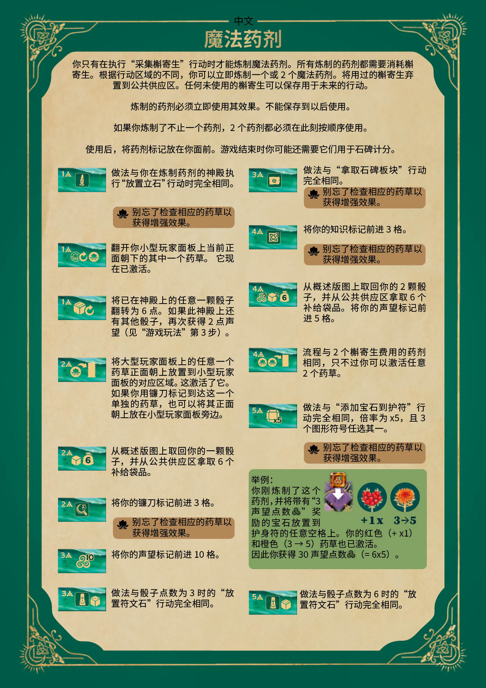
魔法药剂（规则参考表·正面）
〔表头标「中文」〕
你只有在执行「采集槲寄生」行动时才能炼制魔法药剂。所有炼制的药剂都需要消耗槲寄生。根据行动区域的不同，你可以立即炼制一个或 2 个魔法药剂。将用过的槲寄生弃置到公共供应区。任何未使用的槲寄生可以保存用于未来的行动。
炼制的药剂必须立即使用其效果。不能保存到以后使用。
如果你炼制了不止一个药剂，2 个药剂都必须在此刻按顺序使用。
使用后，将药剂标记放在你面前。游戏结束时你可能还需要它们用于石碑计分。
- 〔费用：1 槲寄生〕做法与你在炼制药剂的神殿执行「放置立石」行动时完全相同。
别忘了检查相应的药草以获得增强效果。
- 〔费用：1 槲寄生〕翻开你小型玩家面板上当前正面朝下的其中一个药草。它现在已激活。
- 〔费用：1 槲寄生〕将已在神殿上的任意一颗骰子翻转为 6 点。如果此神殿上还有其他骰子，再次获得 2 点声望（见「游戏玩法」第 3 步）。
- 〔费用：2 槲寄生〕将大型玩家面板上的任意一个药草正面朝上放置到小型玩家面板的对应区域。这激活了它。如果你用镰刀标记到达这一个单独的药草，也可以将其正面朝上放在小型玩家面板旁边。
- 〔费用：2 槲寄生〕从概述版图上取回你的一颗骰子，并从公共供应区拿取 6 个补给袋品。
- 〔费用：2 槲寄生〕将你的镰刀标记前进 3 格。
别忘了检查相应的药草以获得增强效果。
- 〔费用：2 槲寄生〕将你的声望标记前进 10 格。
- 〔费用：3 槲寄生〕做法与骰子点数为 3 时的「放置符文石」行动完全相同。
- 〔费用：3 槲寄生〕做法与「拿取石碑板块」行动完全相同。
别忘了检查相应的药草以获得增强效果。
- 〔费用：4 槲寄生〕将你的知识标记前进 3 格。
别忘了检查相应的药草以获得增强效果。
- 〔费用：4 槲寄生〕从概述版图上取回你的 2 颗骰子，并从公共供应区拿取 6 个补给袋品。将你的声望标记前进 5 格。
- 〔费用：4 槲寄生〕流程与 2 个槲寄生费用的药剂相同，只不过你可以激活任意 2 个药草。
- 〔费用：5 槲寄生〕做法与「添加宝石到护符」行动完全相同，倍率为 x5，且 3 个图形符号任选其一。
别忘了检查相应的药草以获得增强效果。
- 〔费用：5 槲寄生〕做法与骰子点数为 6 时的「放置符文石」行动完全相同。
举例：
你刚炼制了这个药剂，并将带有「3 声望点数〔三螺旋〕」奖励的宝石放置到护身符的任意空格上。你的红色（+x1）和橙色（3→5）药草也已激活。因此你获得 30 声望点数〔三螺旋〕（= 6x5）。
〔图解：护符宝石「+1x」＋红色药草、橙色药草「3→5」〕
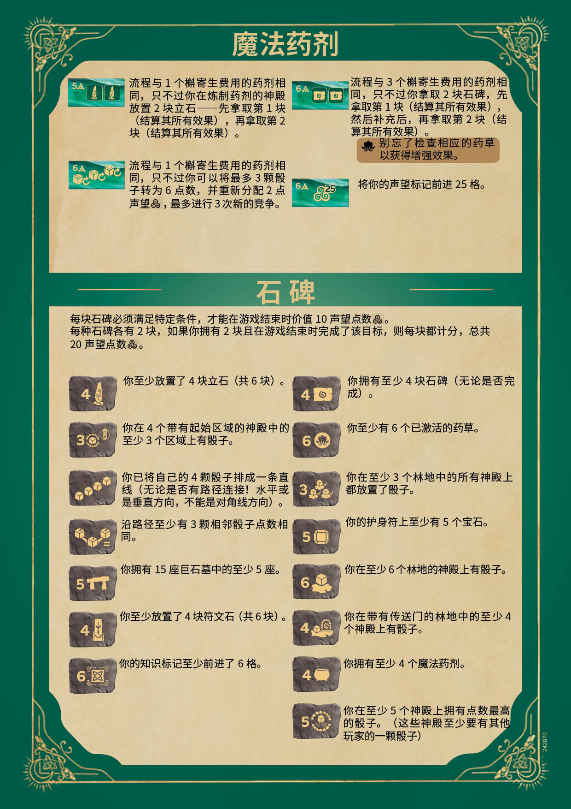
魔法药剂（规则参考表·背面·续）
- 〔费用：5 槲寄生〕流程与 1 个槲寄生费用的药剂相同，只不过你在炼制药剂的神殿放置 2 块立石——先拿取第 1 块（结算其所有效果），再拿取第 2 块（结算其所有效果）。
- 〔费用：6 槲寄生〕流程与 1 个槲寄生费用的药剂相同，只不过你可以将最多 3 颗骰子转为 6 点数，并重新分配 2 点声望〔三螺旋〕，最多进行 3 次新的竞争。
- 〔费用：6 槲寄生〕流程与 3 个槲寄生费用的药剂相同，只不过你拿取 2 块石碑，先拿取第 1 块（结算其所有效果），然后补充后，再拿取第 2 块（结算其所有效果）。
别忘了检查相应的药草以获得增强效果。
- 〔费用：6 槲寄生〕将你的声望标记前进 25 格。
石碑
每块石碑必须满足特定条件，才能在游戏结束时价值 10 声望点〔三螺旋〕。
每种石碑各有 2 块，如果你拥有 2 块且在游戏结束时完成了该目标，则每块都计分，总共 20 声望点〔三螺旋〕。
- 〔石碑面值 4：立石图标〕你至少放置了 4 块立石（共 6 块）。
- 〔石碑面值 3：起始区域图标〕你在 4 个带有起始区域的神殿中的至少 3 个区域上有骰子。
- 〔石碑：四骰斜线图标〕你已将自己的 4 颗骰子排成一条直线（无论是否有路径连接！水平或是垂直方向，不能是对角线方向）。
- 〔石碑：骰子相连图标〕沿路径至少有 3 颗相邻骰子点数相同。
- 〔石碑面值 5：巨石墓图标〕你拥有 15 座巨石墓中的至少 5 座。
- 〔石碑面值 4：符文石图标〕你至少放置了 4 块符文石（共 6 块）。
- 〔石碑面值 6：知识图标〕你的知识标记至少前进了 6 格。
- 〔石碑面值 4：石碑漩涡图标〕你拥有至少 4 块石碑（无论是否完成）。
- 〔石碑面值 6：药草图标〕你至少有 6 个已激活的药草。
- 〔石碑面值 3：林地骰子图标〕你在至少 3 个林地中的所有神殿上都放置了骰子。
- 〔石碑面值 5：护符图标〕你的护身符上至少有 5 个宝石。
- 〔石碑面值 6：林地骰子图标〕你在至少 6 个林地的神殿上有骰子。
- 〔石碑面值 4：传送门图标〕你在带有传送门的林地中的至少 4 个神殿上有骰子。
- 〔石碑面值 4：坩埚图标〕你拥有至少 4 个魔法药剂。
- 〔石碑面值 5：神殿环绕图标〕你在至少 5 个神殿上拥有点数最高的骰子。（这些神殿至少要有其他玩家的一颗骰子）
〔印刷编号 242870〕